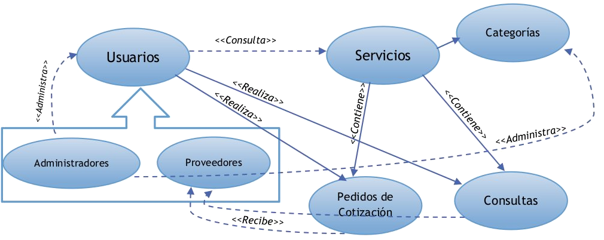

Contenidos
Contenidos
- Padrón: 72821
- Mail: phours@hotmail.com
- Github: phours
- Cel: 1157546504
- Padrón: 94173
- Mail: ncis20@gmail.com.com
- Github: nickcis
- Cel: 1169597983
Se tuvo que desarrollar e implementar una solución para albergar datos y realizar una serie de operaciónes sobre ellos para una empresa de servicios de publicación de anuncios clasificados. El esquema de la aplicación soliitado es el siguiente:
Para ello se decidió dividir la aplicación en tres secciones:
- Capa Fíica: módulos que que administran, crean y modifican las estructuras físicas en disco, representan a las organizaciones de archivos.
- Capa Lógica: módulos que administran, crena y modifican las estructuras lógicas de indexación. Brindan interfaces para los componentes de la capa física.
- Capa Aplicación: módulos que permiten la interacción entre usuarios del sistema y éste.
- Aministración de Espacio Libre con listas encadenadas
- En las partes de RTT cuando se dan de baja elementos, no se borran las referencias en el RTT
Los registros se implementaron mediante el uso de un buffer genérico, se trabajó utilizando directamente un char*. Para des/serializarlos se decidió implementar un serializador.
Primitivas Implementadas:
- Serializador_pack: Genera un buffer serializado, agrega información.
- Serializador_unpack: Deserializa la información
Los bloques se implementaron elaborando un tipo de dato abstracto llamado TBloque.
Primitivas Implementadas:
- Bloque_crear: Crea bloque de registros de longitud variable
- BloqueFijo_crear: Crea bloque de registros de longitud fija.
- Bloque_leer: Lee Bloque de archivo.
- Bloque_escribir: Escribe bloque a archivo.
- Bloque_agregar_buf: Agrega un buffer de información al bloque.
- BloqueFijo_agregar_buf: Agrega un buffer de información al bloque.
- Bloque_libre: Devuelve si el bloque tiene espacio libre para escribir.
- BloqueFijo_libre: Devuelve si el bloque tiene espacio libre para escribir
- Bloque_lleno: Devuelve si el bloque esta lleno teniendo en cuenta el porcentage establecido.
- Bloque_get_buf: Devuelve el Buff (registro) número n que esté en el buffer.
- Bloque_destruir: Destruye bloque (entidad en memoria).
Los archivos de bloques se implementaron elaborando un tipo de dato abstracto llamado TArchivo. Este internamente usa a la entidad TBloque.
Primitivas Implementadas:
- Archivo_crear: Crea Archivo de bloques de registros de longitud variable (sin administración de espacio libre).
- ArchivoFijo_crear: Crea Archivo de bloques de registros de longitud fija(sin administración de espacio libre).
- Archivo_crear_adm: Crea Archivo de bloques de registros de longitud variable (con admi.
- ArchivoFijo_crear_adm: Crea Archivo de bloques de registros de longitud fija.
- Archivo_bloque_seek: Seekea por bloques.
- Archivo_bloque_new: Destruye el bloque que esta actualmente en memoria y crea uno vacio en memoria.
- Archivo_bloque_leer: Lee bloque del archivo.
- Archivo_get_buf: Devuelve un buffer (registro) del bloque abierto, de finalizar el bloque lee el bloque siguiente y devuelve un buffer (registro).
- Archivo_get_bloque_buf: Devuelve buffer del bloque abierto. Se considera error que ya se hallan leido todos los registros del bloque.
- Archivo_bloque_get_buf: Devuelve el Buff (registro) numero n que este en el buffer.
- Archivo_agregar_buf: Agrega un buffer de información al archivo. De llenarse el bloque actual, lo escribe a disco y crea uno nuevo.
- ArchivoFijo_agregar_buf: Agrega un buffer de información al archivo. De llenarse el bloque actual, lo escribe a disco y crea uno nuevo.
- Archivo_bloque_libre: Devuelve si el bloque corriente tiene espacio libre para escribir.
- ArchivoFijo_bloque_libre: Devuelve si el bloque corriente tiene espacio libre para escribir.
- Archivo_libre: Devuelve si el bloque n esta lleno (utilizando la logica del mapa de bits)
- Archivo_bloque_agregar_buf: Agrega un buffer de información al bloque corriente.
- ArchivoFijo_bloque_agregar_buf: Agrega un buffer de información al bloque corriente.
- Archivo_flush: Fuerza la escritura del bloque actual a disco.
- Archivo_close: Cierra Archivo.
- Archivo_open: Abre Archivo (sirve para cuando fue cerrado por el usuario).
- Archivo_get_cur_bloque: Devuelve el numero del bloque en el que esta parado el fd.
- Archivo_destruir: Destruye Archivo (entidad en memoria).
- Archivo_cant_bloque: Devuelve cantidad de bloques que tiene el archivo.
Los archivos de registros se implementaron elaborando un tipo de dato abstracto llamado TArchivoReg.
Primitivas Implementadas:
- ArchivoReg_crear: Crea Archivo de registros.
- ArchivoReg_leer: Lee registro y lo devuelve.
- ArchivoReg_escribir: Escribe buffer(registro) en el archivo.
- ArchivoReg_destruir: Destruye Archivo (entidad en memoria).
- ArchivoReg_seek_end: Seekea el final del archivo.
- ArchivoReg_seek_start: Seekea al principio del archivo.
Todos los archivos cabecera (.h) de las entidades descriptas anteriormente, se encuentran comentados siguiendo las reglas Doxygen. Para tener mas información respecto a los par´metros y funcionamiento de estas, por favor, leer los .h.
El hash extensible se implmentó elaborando un tipo de dato abstracto llamdo THashExtensible. Internamente, este utiliza archivos de bloques para poder guardar la información.
Primitivas Implementadas:
- HashExtensible_crear: Crea un hash extensible.
- HashExtensible_insertar: Obtiene un elemento del hash.
- HashExtensible_get: Escribe buffer(registro) en el archivo.
- HashExtensible_del: Elimina el elemento del hash.
- HashExtensible_destruir: Destruye el hash.
Las listas invertidas se implmentó elaborando un tipo de dato abstracto llamdo TListaInvertida. Internamente, este utiliza archivos de bloques para poder guardar la información.
Primitivas Implementadas:
- ListaInvertida_new: Crea un elemento de la lista invertida.
- ListaInvertida_erase: Borra el elemento corriente.
- ListaInvertida_set: Setea el elemento corriente.
- ListaInvertida_get: Obtiene elemento de la lista.
- ListaInvertida_agregar: Agrega un elemento a la lista corriente.
- ListaInvertida_escribir: Escribe a disco.
- ListaInvertida_destruir: Crea una lista Invertida.
El árbol b+ se implmentó elaborando un tipo de dato abstracto llamdo TArbolBM. Internamente, este utiliza archivos de bloques para poder guardar la información.
Primitivas Implementadas:
- Arbol_crear: Crea el árbol b+.
- Arbol_destruir: Destruye la instancia de árbol.
- Arbol_insertar: Inserta elmento en árbol.
- Arbol_get: Obtiene un elemento del árbol.
- Arbol_remover: Remueve elemento.
RTT se implmentó elaborando un tipo de dato abstracto llamdo TRtt. Internamente, este utiliza árboles b+ y listas invertidas..
Primitivas Implementadas:
- Rtt_crear: Crea una instancia de Rtt.
- Rtt_agregar_texto: Agrega texto. Se debe usar el generar indice después.
- Rtt_remover_termino: Remueve término.
- Rtt_generar_indice: Genera índice.
- Rtt_destruir: Destruye instancia de rtt.
Todos los archivos cabecera (.h) de las entidades descriptas anteriormente, se encuentran comentados siguiendo las reglas Doxygen. Para tener mas información respecto a los par´metros y funcionamiento de estas, por favor, leer los .h.
Todas las funciones del menú de operaciones se definieron al principio del archivo main.c.
Funciones definidas
- conectarse: Menú para conectarse
- crear_usuario: Menú para crear un usuario
- crear_categoria: Menú para crear una categoria
- menu_conectado_usuario: Menú que se muestra al usuario depués de conectarse
- menu_conectado_provedor: Menú que se muestra al proveedor depués de conectarse
- menu_conectado_admin: Menú que se muestra al adminitrador depués de conectarse
- modificar_datos: Menú usado para que un usuario modifque sus datos
- crear_servicio: Menú usado para que un proveedor cree un servicio
- borrar_servicio: Menú usado para que un proveedor borre un servicio
- buscar_servicio: Menú usado para que un usuario busque un servicio
- imprimir_servicio: Imprime por pantalla la información de un servicio
- imprimir_consulta: Imprime por pantalla la información de una consulta
- menu_pos_busqueda_de_servicio: Menó usado para que un usuario realice acciones sobre un servicio
- nueva_consulta: Menó usado para que un usuario haga una consulta acerca de un servicio
- nueva_cotizacion: Menó usado para que un usuario haga un pedido de cotización acerca de un servicio
- list_categorias: Lista las categorias por pantalla
- list_usuarios: Lista los usuarios de un determinado tipo por pantalla
Se implementó un TDA para el uso de las consultas. Se pensó el modelo estilo Singletone, como se utilizó en TDAs en vez de en clases, se guardaron punteros staticos.
Primitivas Implementadas:
- Consulta_init: Inicializa uso de consultas
- Consulta_end: Finaliza uso de consultas
- Consulta_new: Crea una nueva consultas
- Consulta_from_id: Trae una consultas buscandola desde la id.
- Consulta_del: Borra consulta.
- Consulta_buscar: Busca utilizando RTT la constula.
- Consulta_from_dni: Busca la consulta por dni del creador.
- Consulta_from_serv: Busca la consulta por id de servicio.
- Setters y getters para los datos de la consulta
- Consulta_store: Guarda consulta. Solo se debe llamar para guardar consulta despues de modificarla.
- Consulta_free: Libera memroia para la entidad categoria
Se implementó un TDA para el uso de las cotizaciones. Se pensó el modelo estilo Singletone, como se utilizó en TDAs en vez de en clases, se guardaron punteros staticos.
Primitivas Implementadas:
- Cotizaciones_init: Inicializa uso de consultas
- Cotizaciones_end: Finaliza uso de consultas
- Cotizacion_new: Crea una nueva cotización
- Cotizacion_from_id: Trae una cotización buscandola desde la id.
- Cotizacion_del: Borra cotización.
- Getters para los datos de la cotización
- Cotizacion_free: Libera memroia para la entidad cotización
Se implementó un TDA para el uso de las cotizaciones. Se pensó el modelo estilo Singletone, como se utilizó en TDAs en vez de en clases, se guardaron punteros staticos.
Primitivas Implementadas:
- Cotizaciones_init: Inicializa uso de consultas
- Cotizaciones_end: Finaliza uso de consultas
- Cotizacion_new: Crea una nueva cotización
- Cotizacion_from_id: Trae una cotización buscandola desde la id.
- Cotizacion_del: Borra cotización.
- Getters para los datos de la cotización
- Cotizacion_free: Libera memroia para la entidad cotización
Todos los archivos cabecera (.h) de las entidades descriptas anteriormente, se encuentran comentados siguiendo las reglas Doxygen. Para tener mas información respecto a los par´metros y funcionamiento de estas, por favor, leer los .h.